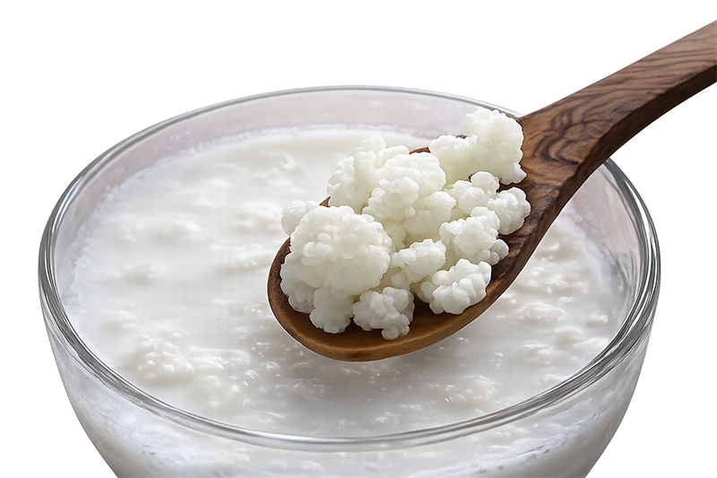
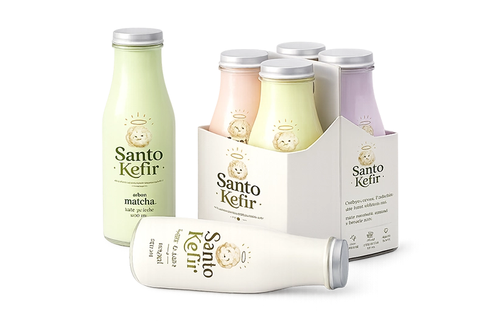
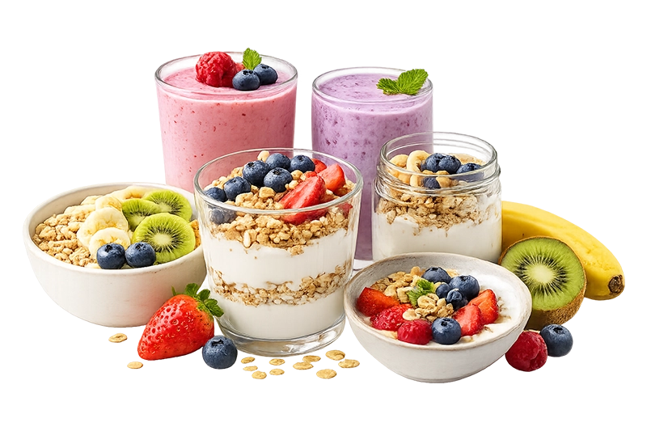
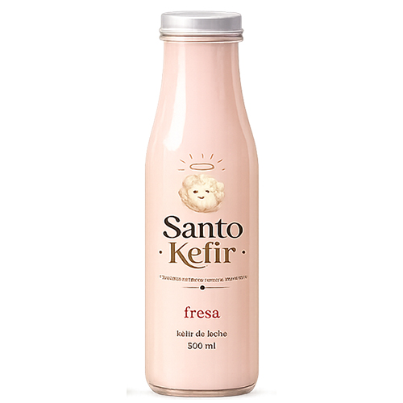
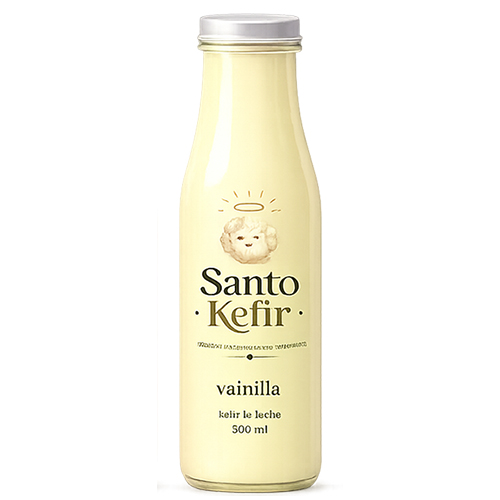

Descubre el kéfir, un alimento fermentado lleno de historia, tradición y cultivos vivos.

Natural, frutal o simplemente diferente. Conoce nuestra variedad de sabores y encuentra tu Santo Kéfir favorito.

Con frutas, cereales o en tu batido favorito. Descubre nuevas formas de incorporar el kéfir a tus desayunos.


